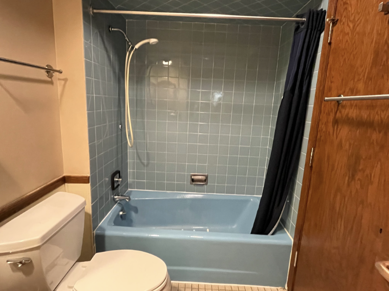
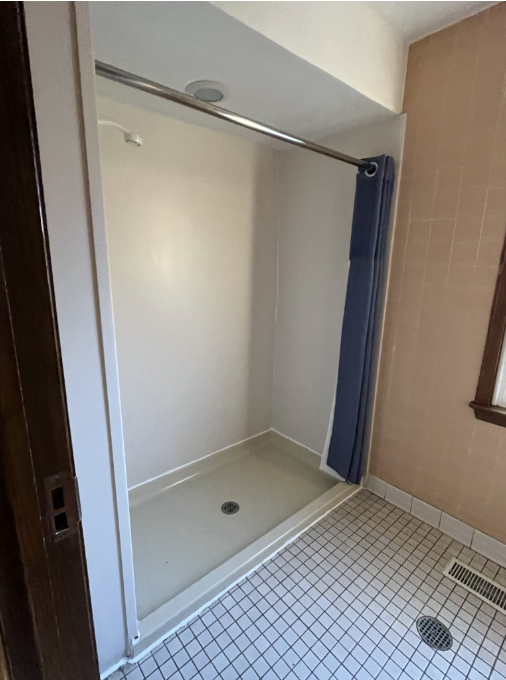
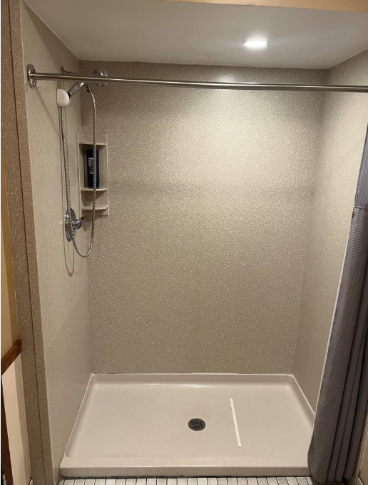
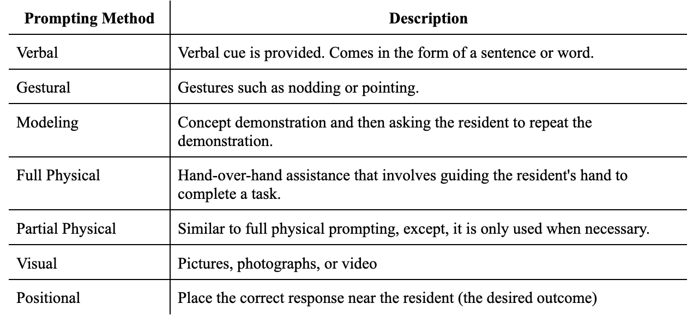
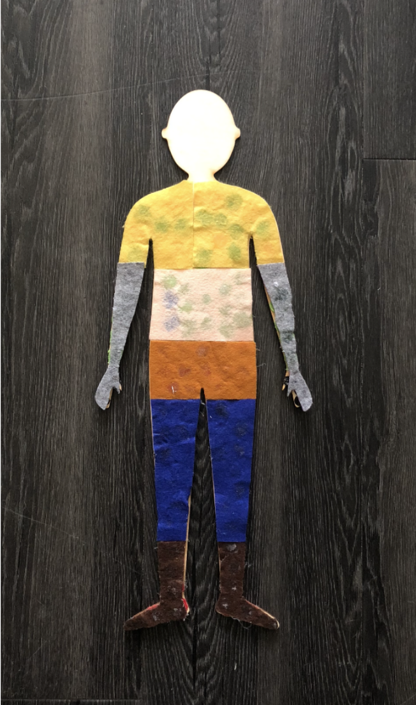
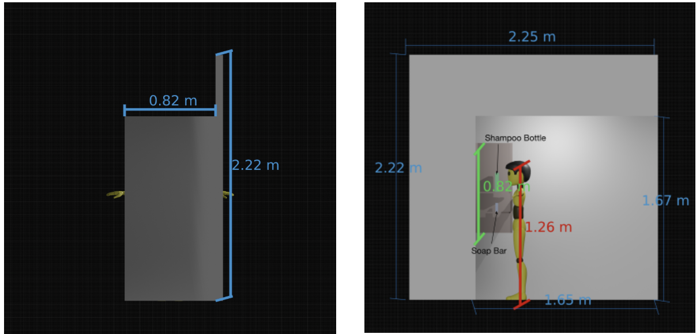
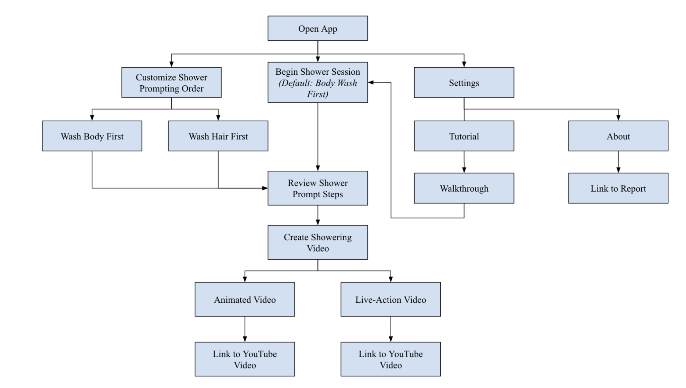
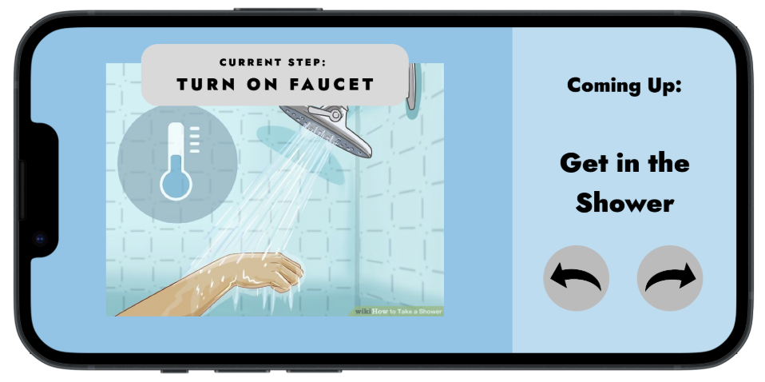
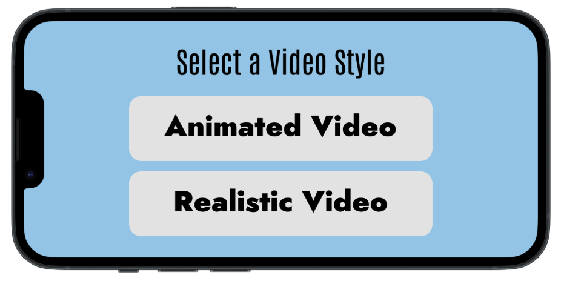

An interactive showering assistance system developed to promote dignity, privacy, and self-agency for residents by replacing direct caregiver prompting with accessible visual and audio guidance.
Winner of the Design Communication Award.
As part of Northwestern's Design Thinking Communication (DTC) program, our team partnered with caregivers and residents to address a challenge affecting individuals who require support during activities of daily living. The project focused on increasing independence during showering for residents who currently rely on staff assistance or prompting throughout the bathing process. While existing caregiving approaches ensure safety and task completion, they often limit opportunities for residents to develop autonomy and perform self-care activities independently.
Our goal was to explore how assistive technology could promote dignity, privacy, and self-agency by reducing reliance on caregivers during showering. Through stakeholder interviews, user observations, concept development, prototyping, and iterative feedback, we developed a system designed to guide residents through the showering process using accessible prompts and intuitive interactions.
Role
User Research & Systems Prototyper
Timeline
ADD Program Framework
Methods
Stakeholder Discovery, Needs Identification, Concept Evaluation, User Flow Testing
Environment
Accessible/Waterproof Design Controls
Many residents require assistance when showering, either through physical support or verbal prompting from caregivers. While effective, these approaches can reduce opportunities for individuals to perform self-care activities independently and limit their sense of personal agency.
Showering is one of the most personal daily activities. Requiring caregiver assistance can impact a resident's privacy and dignity, even when care is delivered respectfully. Creating opportunities for residents to complete portions of the task independently could improve confidence and quality of life.
Staff members often dedicate significant time to guiding residents through routine hygiene tasks. While caregiver support remains essential, increasing resident independence could allow staff to focus attention on individuals requiring more intensive assistance.
The project began with understanding the needs of residents, caregivers, and support staff through a combination of interviews, observations, and site visits. Early in the project, our team toured the residential facility to gain firsthand insight into the showering environment, observe the layout of multiple shower rooms, and understand how residents and caregivers interacted within the space. We met directly with caregivers, staff members, and stakeholders to learn about existing showering workflows, common challenges, safety considerations, and the varying levels of assistance required by different residents.



These observations helped us identify key barriers that prevented residents from showering independently while also revealing operational constraints that any proposed solution would need to accommodate. We focused on understanding not only the physical aspects of showering, but also the emotional and psychological impacts associated with requiring assistance for personal hygiene. Conversations with caregivers and staff highlighted that showering is more than a functional task—it is closely tied to dignity, privacy, confidence, and personal autonomy. These insights became foundational to our design process and ultimately shaped the project's emphasis on empowering residents to participate more independently in their own care.
After synthesizing stakeholder feedback, our team translated observations into a set of design requirements. The solution needed to be intuitive, accessible, waterproof, safe to use in a wet environment, and capable of guiding users through a multi-step process without overwhelming them. Because residents possessed varying levels of cognitive and physical abilities, the system also needed to provide clear instructions while remaining adaptable to individual needs. We referred to ABA therapy prompting methods researched and recommended by Miscericordia staffs to create the instructuions.

Using these requirements, our team generated multiple concepts exploring different approaches to increasing showering independence. Early concepts ranged from automated showering systems to assistive technologies that provided visual, audio, and step-by-step guidance throughout the showering process. Concepts were evaluated based on feasibility, usability, cost, safety, and their ability to preserve resident autonomy. Through iterative discussions and stakeholder feedback, we refined the solution toward a prompting-based system that supported users without removing control from them.


Once a design direction was selected, we developed prototypes to evaluate how residents might interact with the system. We tested user flows, prompt sequences, interface layouts, and interaction methods to determine how instructions could be delivered in a clear and accessible manner. Feedback from stakeholders informed multiple design iterations, helping us improve ease of use, reduce confusion, and ensure the system aligned with real-world caregiving environments.

The final design consisted of a waterproof assistive system that guides residents through the showering process using a combination of visual and audio prompts. Rather than performing the task for the user, the system acts as a supportive guide, breaking showering into manageable steps and providing instructions at appropriate times. This approach allows residents to maintain control over the activity while receiving the assistance necessary to complete it successfully.
The system was designed to promote independence while maintaining user comfort and safety. Visual cues, spoken instructions, and a simplified interaction flow help reduce cognitive load and make the showering process easier to follow. The design also considers the realities of a bathroom environment, prioritizing accessibility, durability, and ease of use for both residents and caregivers.


The project produced a human-centered assistive technology concept focused on increasing independence during one of the most personal activities of daily living. By shifting support from direct caregiver intervention toward guided self-completion, the design created opportunities for residents to participate more actively in their own care. The solution also demonstrated how assistive technologies can be used to promote dignity, privacy, and autonomy while still supporting safety and task completion.
This project strengthened my skills in human-centered design, stakeholder research, needs finding, and translating qualitative insights into actionable engineering requirements. Working directly with caregivers and end users taught me the importance of designing with empathy and understanding that successful solutions must address emotional and social needs in addition to functional requirements.
The project also reinforced the value of iterative design and interdisciplinary collaboration. By continuously incorporating stakeholder feedback into the design process, I learned how to balance user needs, technical constraints, and real-world implementation considerations. Most importantly, the experience deepened my understanding of assistive technology and demonstrated how thoughtful engineering can empower individuals, increase independence, and improve quality of life.